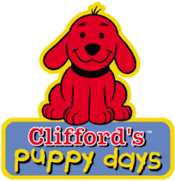

Both Sides of her Carear
Below are the books that made her a householdname
The series is set in Big City, a colorful world populated by a cast of anthropomorphic animals, mythological creatures, and humanoid beings. Each episode follows the daily experiences of a blue octopus named Oswald (voiced by Fred Savage), accompanied by his beloved pet hot dog Weenie, and their life in the cheerful and whimsically-designed community of Big City. Commonly, the program concentrates on Oswald's experiences with friends, acquaintances, and neighbors, including Henry, a penguin and Daisy, a flower, among others - and his patient methods of coping with or tolerating different situations and dilemmas, along with his thoroughly optimistic outlook on life.

Oswald
Clifford's Puppy Days is an American animated children's television series that originally aired on both PBS and PBS Kids from September 15, 2003 to February 23, 2006.[2] A prequel to the original Clifford the Big Red Dog, it features the adventures of Clifford during his puppy days before he became a big red dog and before moving to Birdwell Island.
Clifford Puppy Days
The hunger games is a novel that unfolds in Panem, an apocalyptic world. The story is centered on a 16-year-old girl, Katniss Everdeen and her struggle for survival in dystopia. Each year, as a punishment for the failed rebellion by District 13, the 12 Panem Districts are forced to pay tribute to the ruthless Capitol regime. The story begins on the day of reaping at District 12. A day that each district is required to offer two tributes, a boy and a girl aged 12 to 18 years to participate in the games. This was going to be the 74th hunger games.In a twist of fate, Prim Katniss’ 12-year-old sister is selected as one of the tributes. Having lost their father at a young age, she isn’t going to let her mother lose her too as she swore always to protect them. She volunteers to take her sister’s place, and together with the baker’s son, Peeta Mellark they represent district 12. What follows is a series of events that will put Katniss in the spotlight both as a source of hope for the oppressed and as an enemy of the Capitol. Her feelings for Peeta will be exploited for the games, which are aired across all the districts.She will make new friends, enemies, inspire and give hope to many people in Panem thanks to her performance in the games. What makes the hunger games a more thrilling story is the games win or die rule. Will Katniss have the heart to kill Peeta and vice versa, or will they both survive? This is the Hunger Games summary of the plot.

MockingJay
Learn more about her.
“Reading furnishes the mind only with materials of knowledge; it is thinking that makes what we read ours.” John Locke